Хэллоуин — праздник, традиционно отмечаемый накануне католического Дня всех святых, в ночь с 31-го октября на 1-е ноября. Особенно распространен он в англоязычных странах. Широко отмечается в Великобритании, Северной Ирландии, США, Австралии и Новой Зеландии, хотя выходным днем и не является. Характерная атрибутика и мистическая подоплека постепенно делают это праздник популярным в большинстве стран мира, в том числе и в России.
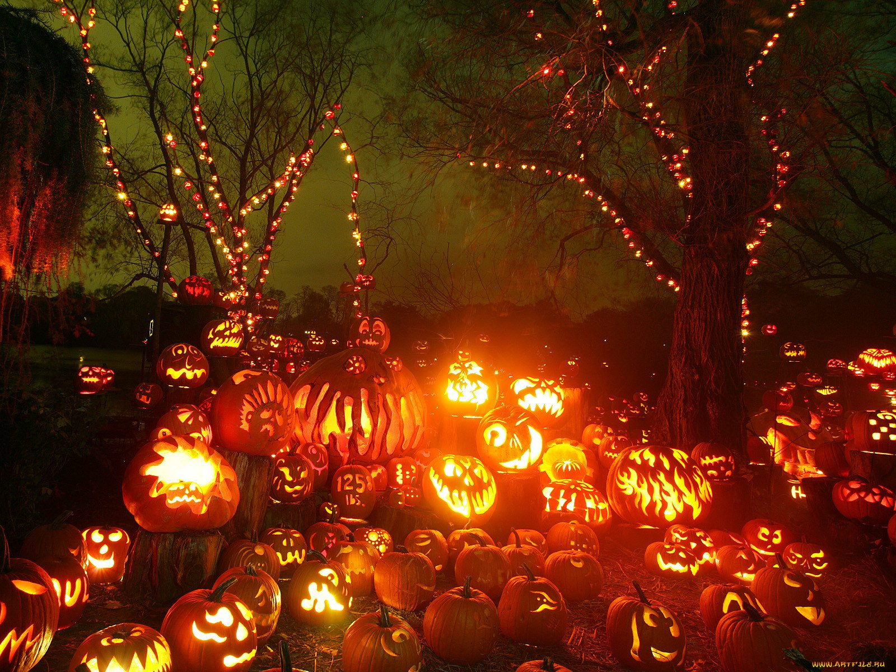История возникновения: Хэллоуин, как многие прочие современные европейские праздники, имеет истоки в дохристианской эпохе. Именно тогда народ кельтов был расселен множеством племен на территории нынешней Франции, Ирландии и Великобритании. У древних кельтов был свой язык, языческие верования и календарь, деливший год на две половины — лето и зиму. Темная часть года, зима, когда земледельческие работы были невозможны, начиналась с ноября, а 31-е октября было последним днем года уходящего. Это же число было и последним днем уборки урожая. Празднование Нового года и завершения полевых работы длилось целую неделю. Серединой праздника была ночь на первое ноября. Это день кельты называли Самайном, что значило «конец лета» на местном языке. Помимо разделения собранного урожая, в этот день было принято особенно почитать умерших. Считалось, что в ночь между последним и первым днем года магическим образом открывается дверь в потусторонний мир, и души мертвых, привидения, выходят к людям. Для того чтобы не стать случайной жертвой обитателей загробного царства, кельты облачались в звериные шкуры, ночью покидали свои темные жилища, возле которых для привидений оставляли вкусные дары, и собирались у огромных, двухрядных костров, разведенных друидами. Между этими кострами было принято проходить всем племенем, с детьми на руках, а также прыгать через костры размером поменьше. Считалось, что сила огня очищает людей и позволяет им войти в Новый год с чистой душой. На празднике также резали часть скотины, кости убитых животных бросали в Священный огонь, а по оставленному костром рисунку на костях предсказывали будущее.
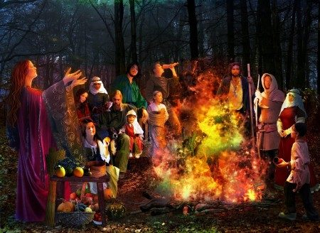Светильник Джек: Большая спелая тыква, с вырезанной на ней весьма пугающей физиономией, которая подсвечивается зажженной изнутри свечой, стала главным символом Хэллоуина. Этот самодельный фонарь получил такое название, как Светильник Джека или Фонарь Джека. С историей возникновения этого самого яркого символа праздника связана древняя ирландская легенда. Считается, что Джек был кузнецом, очень жадным и охочим до денег и выпивки. Жители его деревни настолько устали от назойливого собутыльника, что пропустить с ним стаканчик желающих попросту не осталось. Тогда Джек предложил распить бутылочку в местной забегаловке самому Люциферу. Дьявол согласился составить ему компанию. А когда настало время рассчитаться за выпивку, Джек предложил наивному Сатане обернуться монетой, на что тот также ответил согласием. Хитрый кузнец, недолго думая, тут же спрятал монету в карман, где уже ждал заранее приготовленный крестик. Люцифер попал в западню и не смог выбраться из ловушки, где был образ Спасителя. Джек сдался на уговоры Сатаны выпустить его взамен на обещание того всячески помогать кузнецу в делах.
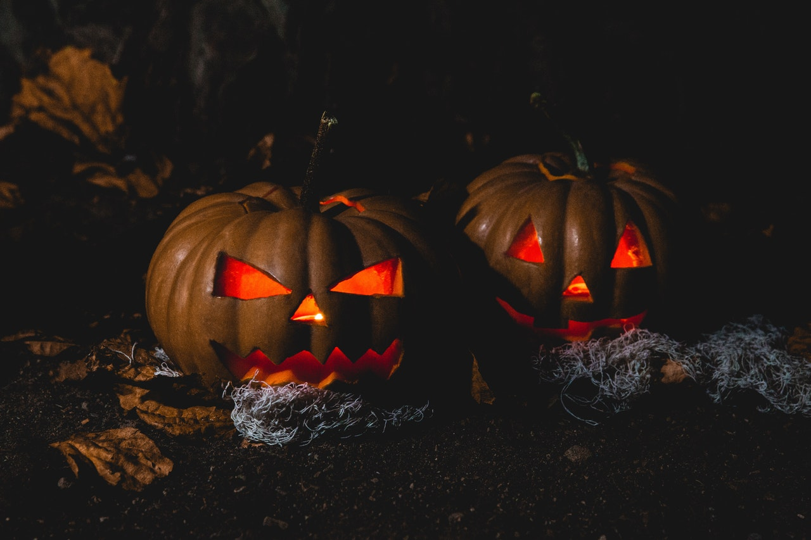 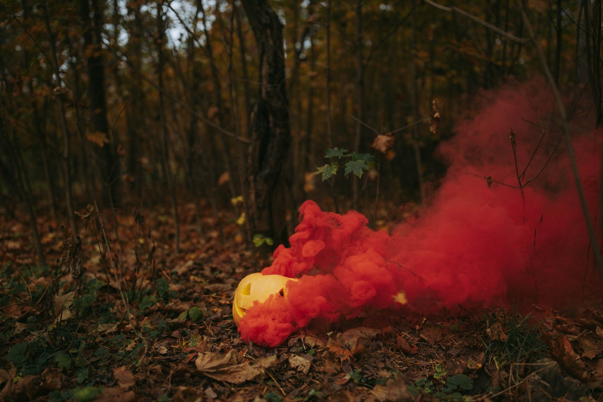Музыка Хэллоуина Праздник Самайна древние кельты никакой музыкой не сопровождали, так что традиционного музыкального сопровождения этот день не имеет. Но Хэллоуин, как праздник, получивший самую большую популярность уже в двадцатом столетии, обрел собственные тематические песни и мелодии. Поскольку основным лейтмотивом празднования является мистика, тема потустороннего мира и его обитателей, то и музыка играется соответствующая. Так, гимном Хэллоуина считается песня «Чудовищное месиво» в исполнении Бобби Пикэтта. Звуковая дорожка из музыкального мультфильма «Кошмар накануне Рождества» также очень популярна и на вечеринках в честь Хэллоуина. Пропитано темой этого праздника и творчество группы Midnight Syndicate («Полночный Синдикат»), многие композиции которой наполнены мистической темой. Миксы из пугающих звуков, к примеру, воя волков, зловещего скрипа, таинственных завываний и злобного смеха, часто используются в хэллоуинских аттракционах и забавах. На молодежных же вечеринках по случаю праздника используется популярная веселая и танцевальная музыка. В клубах — специально созданные диджеями ремиксы и треки. Традиции праздника Основными традициями праздника стало облачение в маскарадные костюмы, посещение специализированных аттракционов, игры, выпрашивание сладостей и вечеринки с праздничным столом.
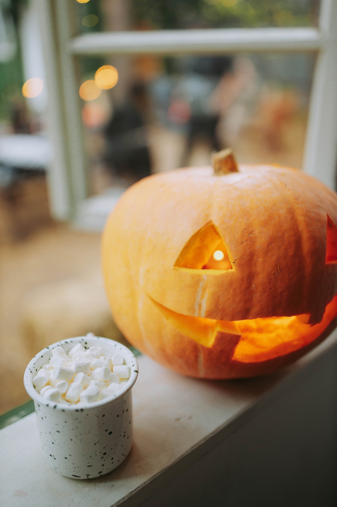 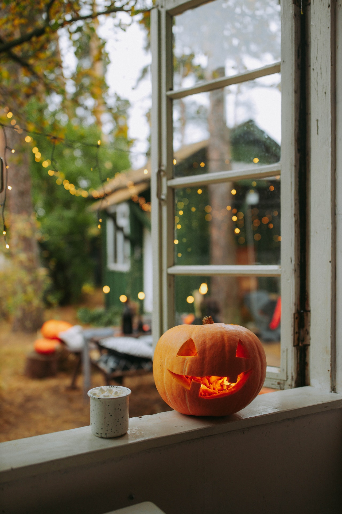Костюмы Надевание карнавальных костюмов на этот праздник берет свое начало в традиции кельтских народов облачаться в звериные шкуры на Самайн, чтобы оградить себя от злых духов и привидений. В современной истории наряжаться в страшный образ на Хэллоуин стало принято только в конце девятнадцатого столетия. Впервые подобный случай был описан в Великобритании, 1895 год. Местные детишки, облачившись в маски и наряды сказочных героев, отправились по домам соседей собирать лакомства и мелкую монету. В остальных странах Европы, а также в Северной Америке, такой традиции не было вплоть до начала 20 века. Сегодня карнавальные костюмы для празднования Хэллоуина начинают продавать еще летом. В США для этих целей существуют специализированные магазины и лавки. И если сто лет назад детский костюм включал в себя лишь уродливую маску с изображением изможденного, обезображенного лица, то сейчас любой фабричный костюм для Хэллоуина выглядит действительно празднично и ярко. Как правило, взрослые и дети облачаются в образ фантастических киногероев, сказочных персонажей, причем как злых и пугающих, к примеру, в зомби, так и в добрых.
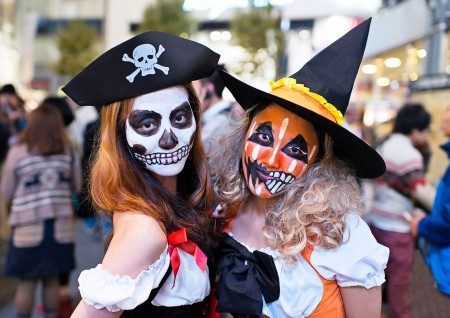Выпрашивание лакомства Традиционное развлечение на Хэллоуин, как это ни странно, прежде всего напоминает Рождество. Так же, как и на Руси в Святки, дети, облаченные в костюмы, ходят по домам и надеются получить от соседей сладости или монетки. Но на Хэллоуин эта традиция имеет собственные характерные черты. Дети одеваются в одежду и маски, изображающие монстров или прочих недобрых персонажей, ходят по домам в округе, выпрашивая различные сладости. При этом хозяевам они задают вопрос «Trick or treat?», что в переводе означает — «Кошелек или жизнь?». Этот вопрос содержит в себе шуточную угрозу причинить хозяевам какую-либо неприятность, если они не выдадут детям монетки, конфеты или прочие угощения.
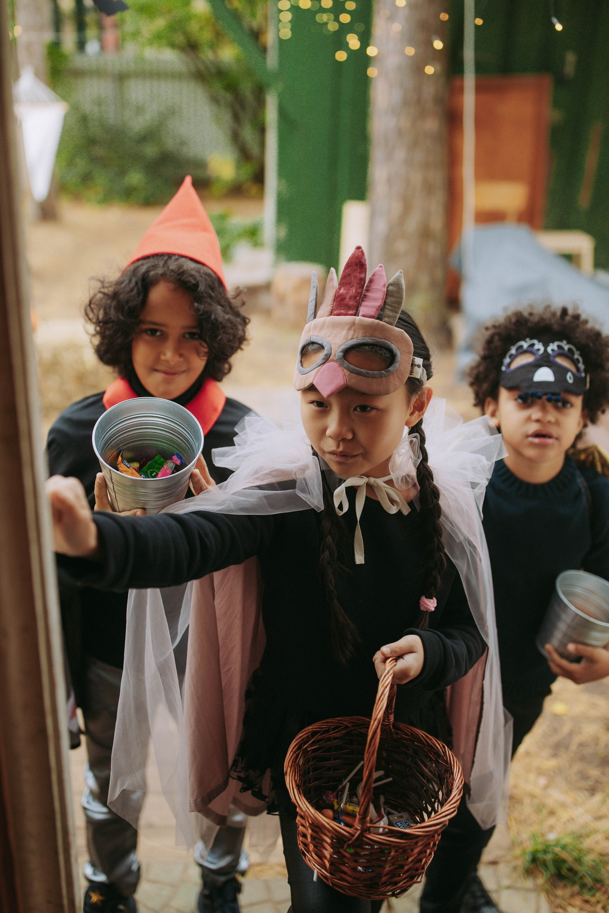 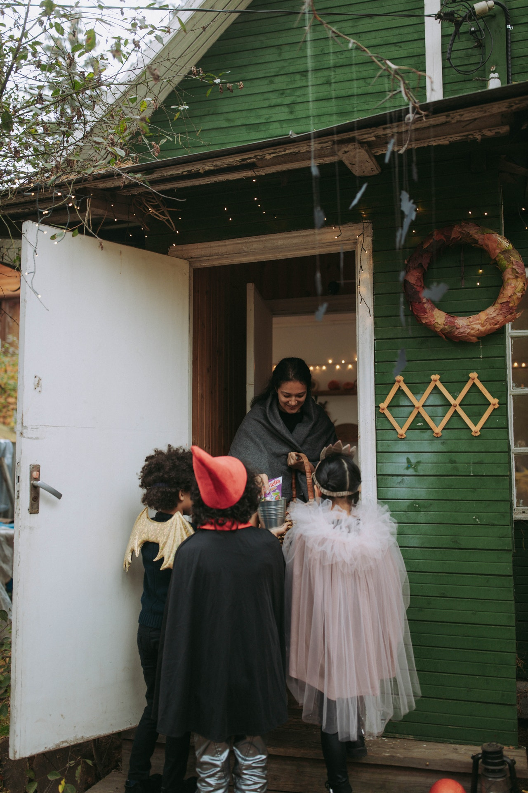Традиционный праздничный стол На Хэллоуин, имеющий в своих истоках остыл к празднику сбора урожая, традиционно подаются сладости из фруктов, главным образом яблок. Яблочная карамель и сладкие яблоки в шоколаде, обсыпанные разноцветным конфетти, а также орехами, стали главными лакомствами праздника. Их можно как приготовить дома, так и купить на хэллоуинском базаре или в парке с пугающими аттракционами. В начале двадцатого века в Великобритании существовала традиция делать конфеты из яблок и раздавать их детям, выпрашивающим сладости по соседям. Но она быстро ушла из обихода из-за случаев, когда злые горожане начиняли подобные конфеты иголками. Дабы не избежать появления травмоопасных ситуаций, власти запретили раздавать такие лакомства.
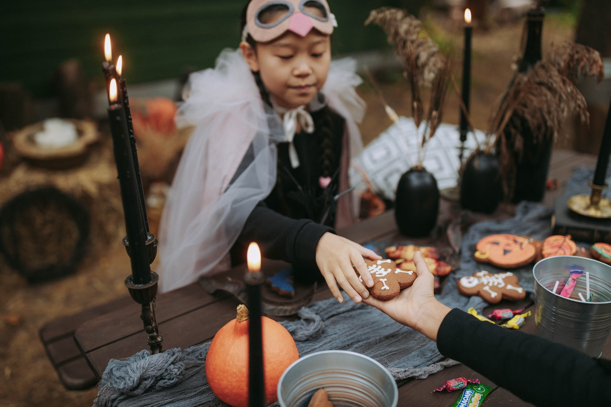Сейчас в Северной Америке на Хэллоуин изготавливают специальные сладости, получившие название «кэнди-корн» и «кэнди-пампкин». Это конфетки в виде тыквы или початка кукурузы. С начала века рецептура практически не изменилась, как и ручной способ приготовления. Конфеты готовятся главным образом из сладкой патоки, желатина, сахара и натурального сока.
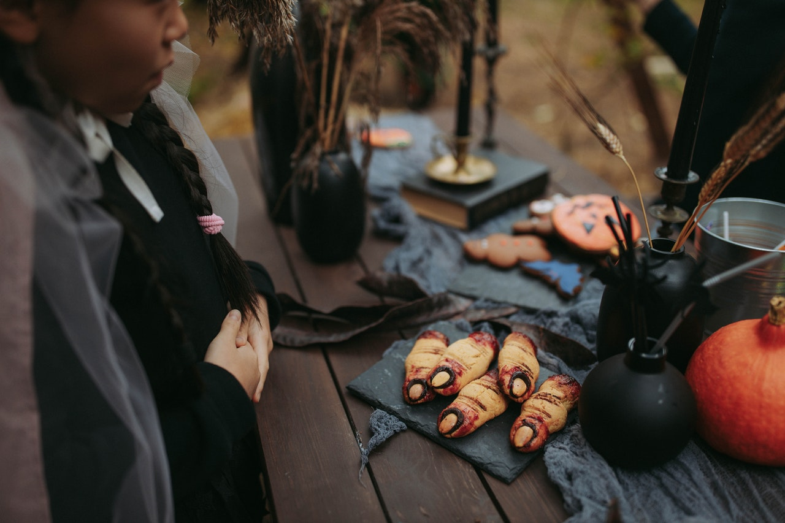 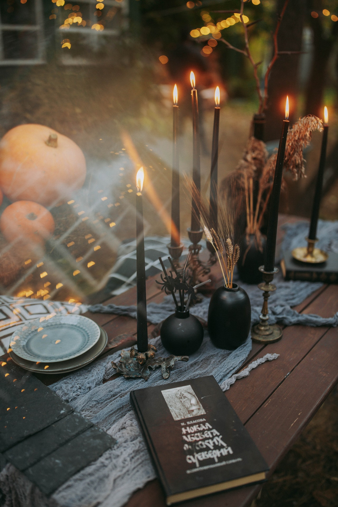 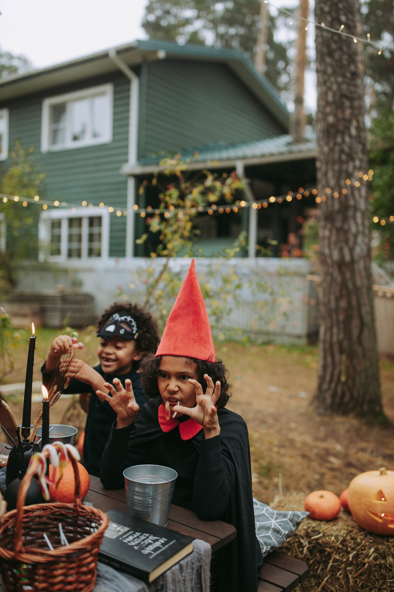Костюмы котиков на Хеллоуин
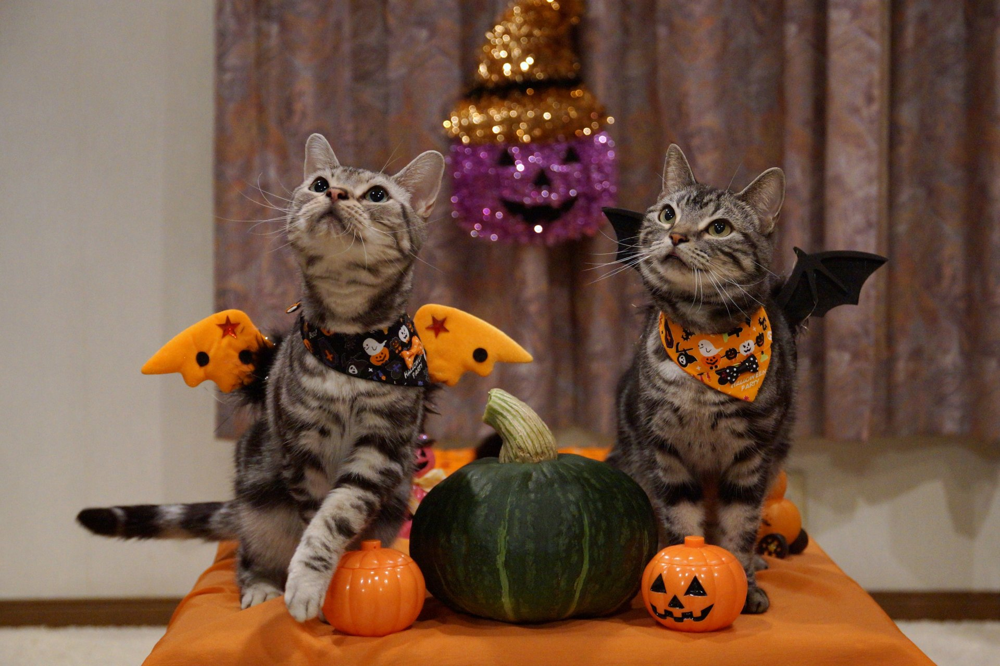 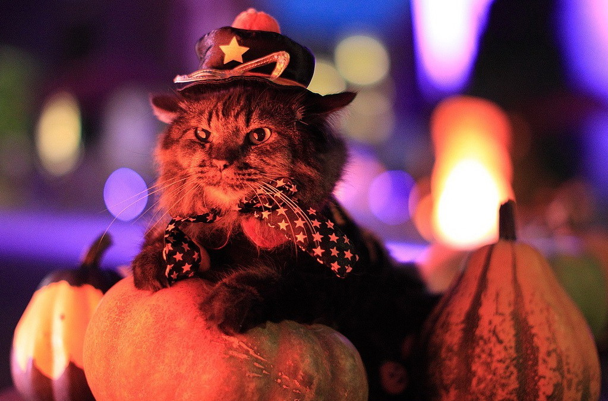 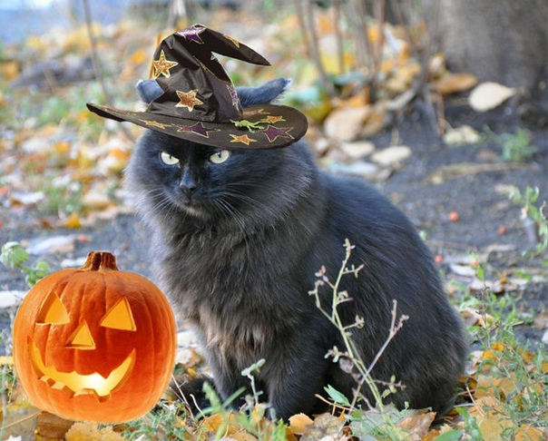